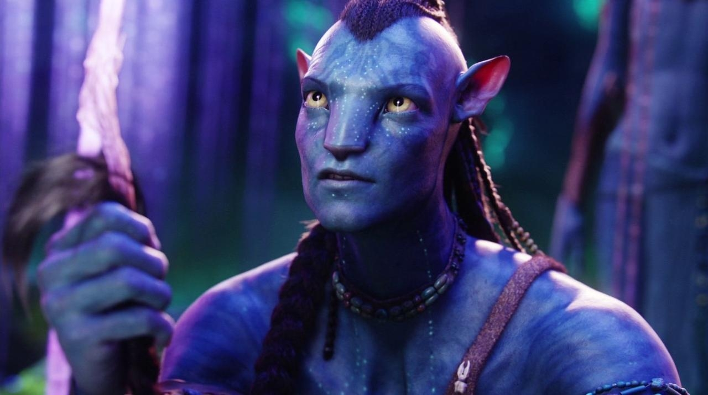

Khán giả luôn tìm kiếm điểm neo cảm xúc. Đừng chỉ mô tả chung chung "một người đàn ông". Hãy cho AI biết đặc điểm nhận dạng và hành động cụ thể đang diễn ra để tạo ra sự sống động.

Bối cảnh cung cấp không gian, còn Góc máy quyết định cách chúng ta nhìn nhận nhân vật đó. Một góc máy rộng (Wide Shot) giữa sa mạc sẽ tạo cảm giác cô đơn, lạc lõng hơn nhiều so với một góc cận (Close-up).
Điện ảnh chính là nghệ thuật kiểm soát ánh sáng. Việc xác định rõ nguồn sáng đến từ đâu, kết hợp với tông màu chủ đạo sẽ ngay lập tức thiết lập "Mood" (cảm xúc) cho toàn bộ bức ảnh.